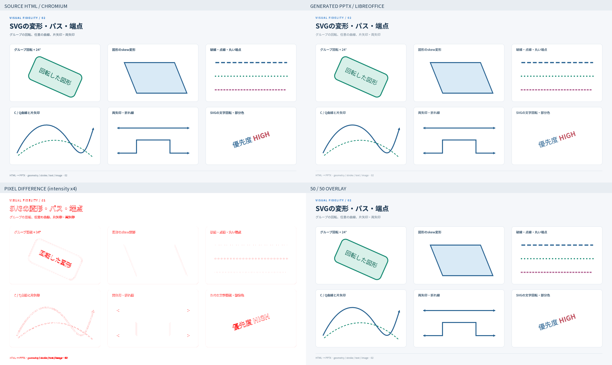
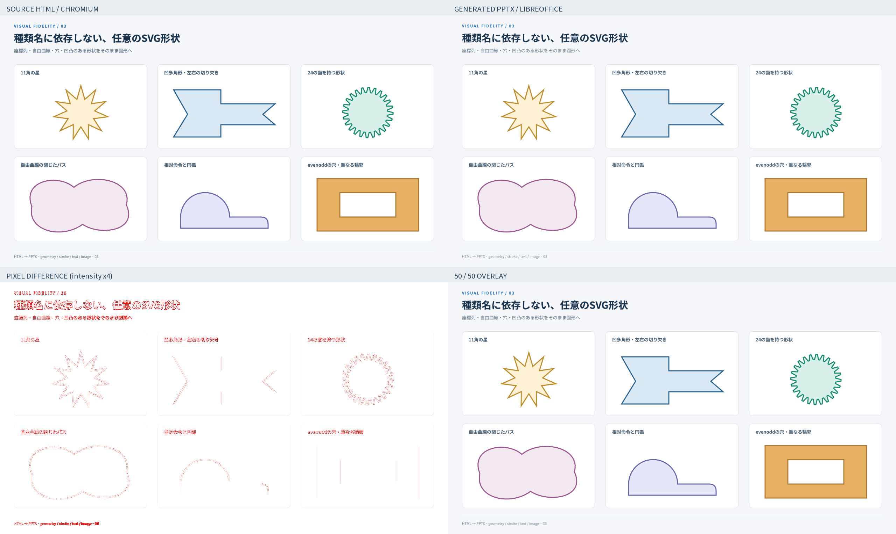
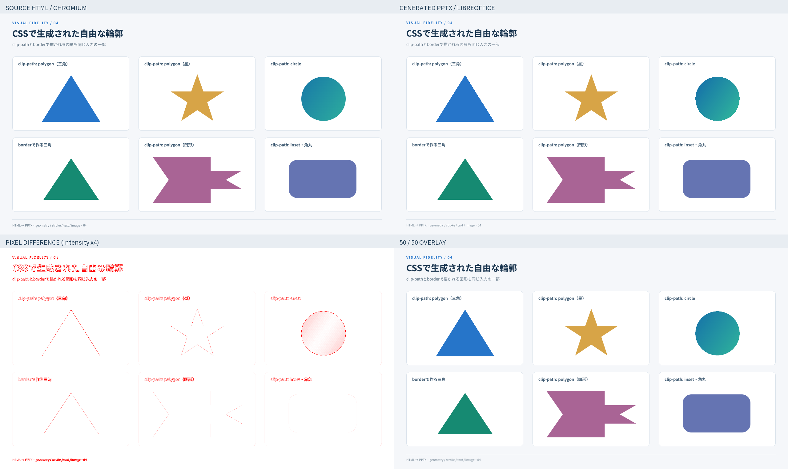
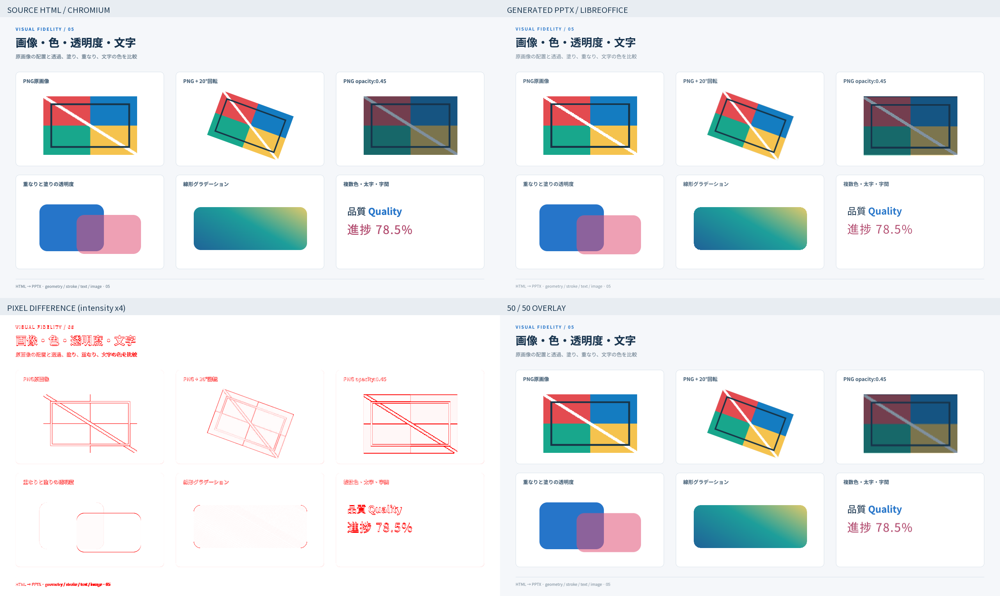

HTML / PPTX ピクセル比較
入力はChromium、変換後PPTXはLibreOffice Impress → PDF → PDFBoxで描画しました。PowerPointアプリそのもののスクリーンショットではありません。文字のアンチエイリアスやフォント描画も差分に含み、ピクセル全一致を合格条件にはしていません。
全体変換：成功。12を超える最大チャンネル差を「差分ピクセル」とします。画像の位置合わせ・自動縮尺補正は行いません。ヒートマップだけは差分強度を4倍にしています。
全計測値 · 入力HTML · 生成PPTX
01 · CSSの回転・境界線・文字
差分ピクセル 1.40% · 平均絶対誤差 0.68 / 255 · 輪郭の不一致 18.75%

入力HTML · 生成PPTXの描画 · 差分 · 輪郭差分 · 重ね合わせ
| パネル | 差分ピクセル | 平均誤差 / 255 | 輪郭の不一致 |
|---|
| 四角 + 30° | 0.48% | 0.19 | 5.85% |
| 角丸四角 − 22° | 0.74% | 0.25 | 7.49% |
| 丸・点線境界 | 1.36% | 0.59 | 32.06% |
| 実線・破線・点線 | 1.11% | 0.36 | 10.36% |
| 文字を − 15°回転 | 2.45% | 1.43 | 25.98% |
| 楕円 + 25°・破線 | 1.48% | 0.52 | 21.55% |
02 · SVGの変形・パス・端点
差分ピクセル 1.42% · 平均絶対誤差 0.68 / 255 · 輪郭の不一致 17.37%

入力HTML · 生成PPTXの描画 · 差分 · 輪郭差分 · 重ね合わせ
| パネル | 差分ピクセル | 平均誤差 / 255 | 輪郭の不一致 |
|---|
| グループ回転 + 24° | 2.22% | 1.21 | 22.46% |
| 図形のskew変形 | 0.66% | 0.28 | 5.36% |
| 破線・点線・丸い端点 | 1.23% | 0.40 | 10.99% |
| C / Q曲線と片矢印 | 1.75% | 0.53 | 16.15% |
| 両矢印・折れ線 | 0.71% | 0.27 | 7.21% |
| SVGの文字回転・部分色 | 2.38% | 1.22 | 28.53% |
03 · 種類名に依存しない、任意のSVG形状
差分ピクセル 1.61% · 平均絶対誤差 0.69 / 255 · 輪郭の不一致 16.90%

入力HTML · 生成PPTXの描画 · 差分 · 輪郭差分 · 重ね合わせ
| パネル | 差分ピクセル | 平均誤差 / 255 | 輪郭の不一致 |
|---|
| 11角の星 | 1.46% | 0.35 | 12.00% |
| 凹多角形・左右の切り欠き | 1.33% | 0.45 | 12.71% |
| 24の歯を持つ形状 | 1.96% | 0.56 | 14.66% |
| 自由曲線の閉じたパス | 1.75% | 0.50 | 15.49% |
| 相対命令と円弧 | 0.86% | 0.30 | 9.70% |
| evenoddの穴・重なる輪郭 | 1.06% | 0.40 | 10.29% |
04 · CSSで生成された自由な輪郭
差分ピクセル 1.17% · 平均絶対誤差 0.60 / 255 · 輪郭の不一致 16.22%

入力HTML · 生成PPTXの描画 · 差分 · 輪郭差分 · 重ね合わせ
| パネル | 差分ピクセル | 平均誤差 / 255 | 輪郭の不一致 |
|---|
| clip-path: polygon（三角） | 1.04% | 0.44 | 12.10% |
| clip-path: polygon（星） | 0.98% | 0.34 | 10.50% |
| clip-path: circle | 0.86% | 0.75 | 16.32% |
| borderで作る三角 | 0.86% | 0.27 | 11.72% |
| clip-path: polygon（凹形） | 0.99% | 0.39 | 9.43% |
| clip-path: inset・角丸 | 0.64% | 0.27 | 7.30% |
05 · 画像・色・透明度・文字
差分ピクセル 2.50% · 平均絶対誤差 1.07 / 255 · 輪郭の不一致 26.86%

入力HTML · 生成PPTXの描画 · 差分 · 輪郭差分 · 重ね合わせ
| パネル | 差分ピクセル | 平均誤差 / 255 | 輪郭の不一致 |
|---|
| PNG原画像 | 4.24% | 1.10 | 22.67% |
| PNG + 20°回転 | 3.25% | 0.87 | 15.09% |
| PNG opacity:0.45 | 6.12% | 2.41 | 54.02% |
| 重なりと塗りの透明度 | 1.25% | 0.57 | 25.01% |
| 線形グラデーション | 0.65% | 0.41 | 8.96% |
| 複数色・太字・字間 | 3.47% | 2.03 | 39.74% |